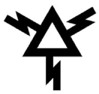

Shining Spears
| Shining Spears | |
|---|---|
| Aspect Warriors of the Craftworld Aeldari | |
 Rune of the Shining Spears Artwork © Games Workshop | |
| Phoenix Lord | Drastanta, "Tempest of Starlight" |
| Role | Fast attack and line-breaking |
| Mount | Jetbike |
| Weapon | Laser Lance |
| Colours | Blue, white and silver |
| Squad size | Three to five warriors |
The Shining Spears are one of the rarest and most specialised of the Craftworld Aeldari Aspect Warriors. Each member carries a bright and clear virtue that marks them as a warrior hero and a champion of the Aeldari. Their role is the spear of Khaine, the invincible weapon of the Aeldari god of war, which strikes like lightning and kills with a single blow.[1]
The Shining Spears can be told apart from the other Asuryani Aspect Shrines because they are the only Aspect to fight on anti-gravity Jetbikes. Their Phoenix Lord, Drastanta, disappeared soon after he founded the Shining Spears Aspect Shrine. His whereabouts are unknown.[1]
Role in battle
[edit]The Aspect maintains only a small presence on a few craftworlds, among them the major craftworld Ulthwé. The Shining Spears are nonetheless regarded as an elite force. Their squads are small, usually three to five warriors, and sometimes led by an Exarch. Even a small squad can turn a long battle, because its charges strike with the force of a thunderbolt.[1]
Each warrior is so attuned to the Jetbike that they can perform complex high-speed manoeuvres with a single gesture. Their Jetbikes carry twin-linked Shuriken Catapults. Their ritual weapon is the Laser Lance, which delivers intense, short-range energy blasts and is used at the moment of the charge. Their tactics are hit-and-run, as they sweep past the foe and return for another attack. This is similar to the duelling Dragon Knights of the Exodites.[1]
Shrines
[edit]- Blooded Blade Shrine: rides to the defence of Maiden Worlds threatened by the "lesser races". Like their Exodite wards, who slay the great beasts of their homelands, these warriors lay low the mightiest of foes.
- Riders of Khaine Shrine: its warriors are swept up in visions of past glories as they race into battle and fight with renewed vigour. They know that a single devastating charge can break the foe and bring hope to their allies.
- Swift Kill Shrine: known for daring charges. Its warriors wear dark azure helms, recalling the lost Phoenix Lord Drastanta and his prized helm, the Crown of the Seventh Sky.
Exarchs
[edit]Every Aspect Shrine is led by an Exarch, an Asuryani who has been called permanently to the Path of the Warrior and can no longer leave it. Exarchs wear richer versions of Aspect Armour that hold the souls of past wearers. These grant them knowledge across the millennia and a pool of psychic energy that they can use in combat.[2]
The Exarchs of the Shining Spears are masters of the lightning attack and can fly the most complex manoeuvres at speed. In place of the usual Laser Lance they carry a Star Lance, a far more powerful version, or an Aeldari Power Weapon if they prefer aerial close combat. Their Jetbikes carry a Shuriken Cannon in place of the Shuriken Catapults. Exarchs lead their squads unerringly around tree trunks and branches, down twisting gorges and through rubble-strewn corridors. In combat they watch for the best moment to withdraw so that the squad is ready to attack again.[2]
Phoenix Lord
[edit]Drastanta, the "Tempest of Starlight", was one of the first warriors chosen to serve at the side of Asurmen, the first Phoenix Lord, and became an Exarch before the Fall of the Aeldari (c. M30). He is recorded as over-proud and much given to needless lone battles.[2]
During the Fall, the birth of Slaanesh destroyed the Aeldari world of Asur and ended Asurmen's first incarnation in battle against the daemonic legions. Drastanta arrived late to his master's last stand and found him fallen to the Keeper of Secrets N'Kari. In grief and rage he slew the Greater Daemon with his crystal Star Lance, the Celestial Lance, and banished it to the Realm of Chaos. He then vanished into the war-torn galaxy, having first founded the Shining Spears Aspect Shrine on the surviving craftworlds. The Celestial Lance has since passed from shrine to shrine and craftworld to craftworld, so that the old tales stay alive.[2]
Wargear
[edit]Shining Spears wear lightweight Aspect Armour of synthetic bodysuit reinforced with psycho-sensitive plates that harden instantly against impact. Its breastplate bears the warrior's Spirit Stone. The domes on the armour are compartments for the suit's systems, not gems. The Aspect's colours are always blue and white, whatever the home craftworld. The helmet is shorter than the usual Aspect Helmet, which makes it more aerodynamic. It bears the Aspect's rune on the brow and holds a targeting device that tracks several targets at once.[2]
Their only weapon is the Laser Lance, a short-ranged beam strong enough to run down any foe, which makes the Aspect resemble anti-gravitic heavy cavalry. Their Jetbikes can climb the smooth faces of buildings on the anti-gravity field they generate.[2]
Timeline
[edit]| Date | Event |
|---|---|
| c. M30 | Drastanta slays N'Kari, founds the Shining Spears Aspect Shrine and disappears (dates estimated) |